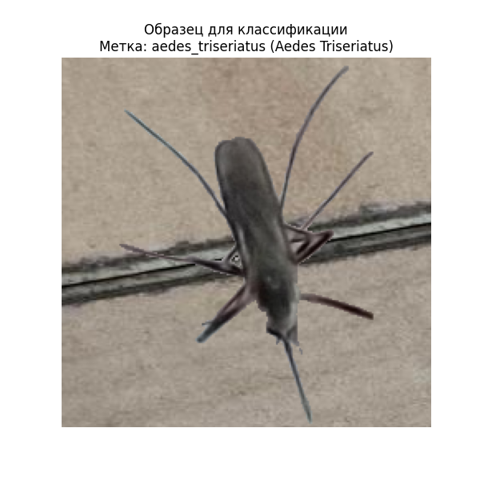
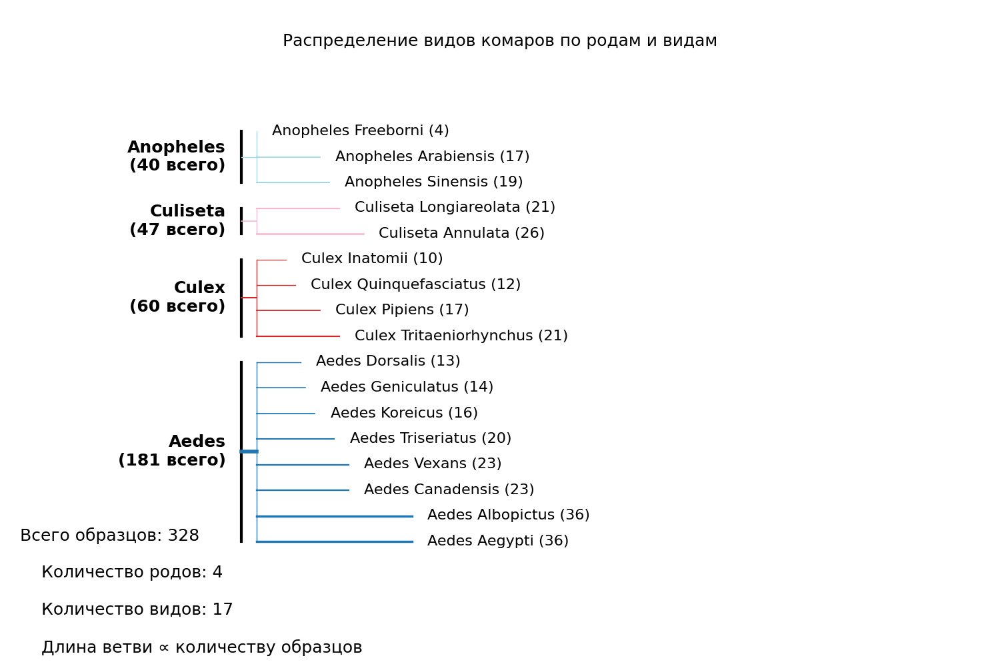
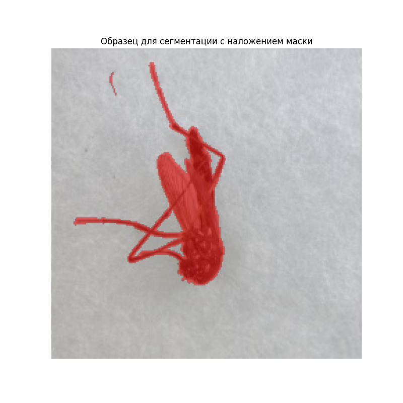
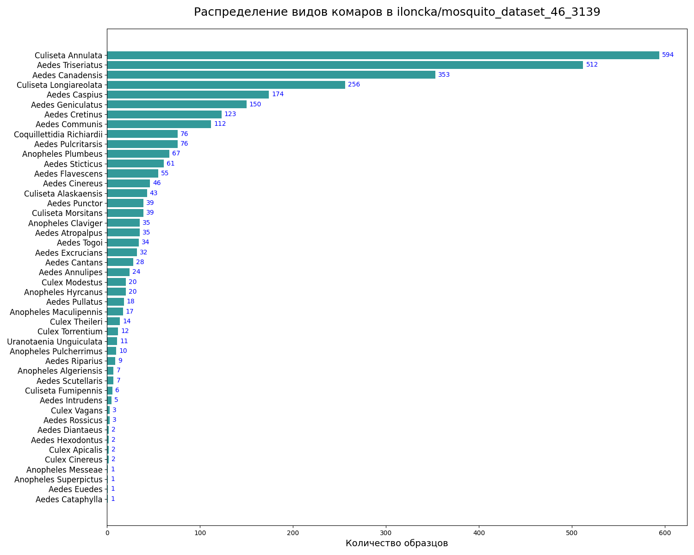
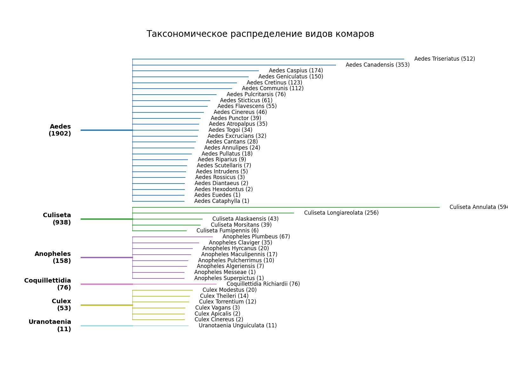

Note
Click here to download the full example code
Управление и загрузка наборов данных
Это руководство демонстрирует, как использовать DatasetsManager в CulicidaeLab
для взаимодействия с наборами данных, определенными в конфигурации библиотеки.
Для кого это руководство?
Это руководство предназначено для исследователей, разработчиков и студентов, работающих в области энтомологии, эпидемиологии и компьютерного зрения. Независимо от того, обучаете ли вы новую модель ИИ, тестируете алгоритм или исследуете биоразнообразие комаров, это руководство поможет вам быстро начать работу с доступными наборами данных о комарах.
Что вы узнаете:
- Как инициализировать
DatasetsManager. - Как выводить список доступных наборов данных о комарах и просматривать их детали.
- Как загружать наборы данных для классификации, детекции и сегментации.
- Как выполнять исследовательский анализ данных (EDA) на наборе данных о разнообразии комаров.
Предварительные требования
Перед началом убедитесь, что у вас установлены culicidaelab и другие необходимые библиотеки с помощью кода:
Импорты из стандартной библиотеки
from collections import defaultdict
from pathlib import Path
import json
# Импорты сторонних библиотек
import matplotlib.pyplot as plt
import numpy as np
import requests
import yaml
import cv2
# Импорты из CulicidaeLab
from culicidaelab import get_settings, DatasetsManager, DatasetConfig
1. Быстрый старт: Загрузка набора данных в 3 строки
Для тех, кто хочет получить данные немедленно. Этот фрагмент кода инициализирует библиотеку и загружает тестовую часть набора данных для классификации видов комаров.
print("--- Быстрый старт: Загрузка набора данных для классификации ---")
# Инициализация настроек и менеджера наборов данных
settings = get_settings()
manager = DatasetsManager(settings)
# Загрузка набора данных для классификации
classification_dataset = manager.load_dataset("classification", split="test")
print(f"🚀 Быстрый старт успешен! Загружено {len(classification_dataset)} образцов для классификации.")
Out:
--- Быстрый старт: Загрузка набора данных для классификации ---
Cache hit for split config: test (key: 4d967a30111bf29f)
🚀 Быстрый старт успешен! Загружено 328 образцов для классификации.
2. Инициализация и исследование доступных наборов данных
Теперь давайте углубимся в каждый компонент.
print("--- Инициализация основных компонентов ---")
# Функция get_settings() является синглтоном, поэтому она вернет
# уже загруженный экземпляр
settings = get_settings()
# `DatasetsManager` — это ваш центральный узел для всех задач, связанных с наборами данных.
# Он управляет загрузкой, кэшированием и чтением данных.
manager = DatasetsManager(settings)
print("✅ Основные компоненты инициализированы.")
Out:
Вывод списка наборов данных и их статистики
Вы можете легко просмотреть все наборы данных, настроенные в библиотеке, и получить краткий обзор их содержимого.
print("\n--- Доступные наборы данных ---")
dataset_names = manager.list_datasets()
for name in dataset_names:
try:
# Доступ к конфигурации набора данных напрямую из настроек
config = settings.get_config(f"datasets.{name}")
class_count = len(config.classes)
print(f"\n📋 Набор данных: '{name}'")
print(f" - Поставщик: {config.provider_name}")
print(f" - Репозиторий: {config.repository}")
print(f" - Формат: {config.format}")
print(f" - Классы: {class_count}")
except KeyError:
print(f"\nНе удалось найти конфигурацию для набора данных: {name}")
Out:
--- Доступные наборы данных ---
📋 Набор данных: 'classification'
- Поставщик: huggingface
- Репозиторий: iloncka/mosquito-species-classification-dataset
- Формат: imagefolder
- Классы: 18
📋 Набор данных: 'detection'
- Поставщик: huggingface
- Репозиторий: iloncka/mosquito-species-detection-dataset
- Формат: yolo
- Классы: 1
📋 Набор данных: 'segmentation'
- Поставщик: huggingface
- Репозиторий: iloncka/mosquito-species-segmentation-dataset
- Формат: coco
- Классы: 1
📋 Набор данных: 'species_diversity'
- Поставщик: huggingface
- Репозиторий: iloncka/mosquito_dataset_46_3139
- Формат: imagefolder
- Классы: 46
3. Загрузка и визуализация каждого типа наборов данных
culicidaelab поддерживает три основных типа задач: классификация, детекция и сегментация.
Давайте загрузим по одному образцу из каждого и визуализируем данные, чтобы понять их структуру.
Сценарий 1: Классификация видов
Цель: Определить вид комара по изображению.
Структура данных: Набор данных возвращает словарь, содержащий Image из PIL
и строковую label (метку).
print("\n--- Загрузка набора данных для классификации ---")
class_data = manager.load_dataset("classification", split="test")
# Давайте рассмотрим один образец
sample = class_data[10]
image = sample["image"]
label = sample["label"]
# В `features` набора данных содержится сопоставление целочисленного ID с именем класса
class_name = class_data.features["label"]
species_name = label.replace("_", " ").title()
print(f"Размер изображения образца: {image.size}")
print(f"Метка образца: {label}")
print(f"Соответствующее название вида: {species_name}")
# Визуализация образца
plt.figure(figsize=(6, 6))
plt.imshow(image)
plt.title(f"Образец для классификации\nМетка: {label} ({species_name})")
plt.axis("off")
plt.show()

Out:
--- Загрузка набора данных для классификации ---
Cache hit for split config: test (key: 4d967a30111bf29f)
Размер изображения образца: (224, 224)
Метка образца: aedes_triseriatus
Соответствующее название вида: Aedes Triseriatus
C:/Users/lenova/CascadeProjects/culicidaelab/docs/ru/examples/tutorial_part_1_datasets_example.py:138: UserWarning: FigureCanvasAgg is non-interactive, and thus cannot be shown
plt.show()
Сценарий 2: Детекция комаров
Цель: Нарисовать ограничивающую рамку (bounding box) вокруг каждого комара на изображении.
Структура данных: Набор данных предоставляет ограничивающие рамки в формате [x_min, y_min, x_max, y_max]
и соответствующие метки для каждого объекта.
print("\n--- Загрузка набора данных для детекции ---")
# Примечание: формат YOLO может требовать специальной обработки, не описанной здесь.
# В этом примере мы будем использовать набор данных для сегментации в формате COCO и
# рассматривать его рамки как рамки для детекции.
detect_data = manager.load_dataset("detection", split="train[:20]")
# Изучение образца для детекции
detect_sample = detect_data[5]
detect_image_pil = detect_sample["image"]
# Преобразование изображения PIL в формат OpenCV для рисования
detect_image_cv2 = cv2.cvtColor(np.array(detect_image_pil), cv2.COLOR_RGB2BGR)
objects = detect_sample["objects"]
print(f"На этом изображении найдено {len(objects['bboxes'])} объект(ов).")
# Рисуем ограничивающие рамки на изображении
for bbox in objects["bboxes"]:
x_min, y_min, x_max, y_max = (int(v) for v in bbox)
# Рисуем зеленый прямоугольник
cv2.rectangle(detect_image_cv2, (x_min, y_min), (x_max, y_max), (0, 255, 0), 2)
# Визуализация образца
plt.figure(figsize=(8, 8))
plt.imshow(cv2.cvtColor(detect_image_cv2, cv2.COLOR_BGR2RGB))
plt.title("Образец для детекции с ограничивающими рамками")
plt.axis("off")
plt.show()

Out:
--- Загрузка набора данных для детекции ---
Cache hit for split config: train[:20] (key: 9e9940e1c673b6f0)
На этом изображении найдено 1 объект(ов).
C:/Users/lenova/CascadeProjects/culicidaelab/docs/ru/examples/tutorial_part_1_datasets_example.py:175: UserWarning: FigureCanvasAgg is non-interactive, and thus cannot be shown
plt.show()
Сценарий 3: Сегментация изображений
Цель: Выделить точные пиксели тела комара на фоне.
Структура данных: Набор данных предоставляет label (метку),
которая является 2D-массивом (маской), где значения пикселей указывают на класс.
print("\n--- Загрузка набора данных для сегментации ---")
seg_data = manager.load_dataset("segmentation", split="train[:20]")
# Изучение образца для сегментации
seg_sample = seg_data[0]
seg_image = seg_sample["image"]
seg_mask = np.array(seg_sample["label"]) # Преобразуем маску в массив numpy
print(f"Размер изображения: {seg_image.size}")
print(f"Форма маски сегментации: {seg_mask.shape}")
print(f"Уникальные значения в маске: {np.unique(seg_mask)}") # 0 - фон, 1 - комар
# Создаем цветное наложение для маски
# Где маска равна 1 (комар), делаем ее красной
overlay = np.zeros((*seg_mask.shape, 4), dtype=np.uint8)
overlay[seg_mask >= 1] = [255, 0, 0, 128] # Красный цвет с 50% прозрачностью
# Визуализация изображения с наложением маски
fig, ax = plt.subplots(figsize=(8, 8))
ax.imshow(seg_image)
ax.imshow(overlay)
ax.set_title("Образец для сегментации с наложением маски")
ax.axis("off")
plt.show()

Out:
--- Загрузка набора данных для сегментации ---
Cache hit for split config: train[:20] (key: 9e9940e1c673b6f0)
Размер изображения: (224, 224)
Форма маски сегментации: (224, 224)
Уникальные значения в маске: [ 0 1 2 3 4 5 6 7 8 9 10 11 12 13 14 15 16 17 18 19 20 21 22 23 24 25 26 27 28 29 30 31 32 33 34 35 36 37 38 39 40 41 42 43 44 45 46 47 48 49 50 51 52 53 54 55 56 57 58 59 60 61 62 63 64 65 66 67 68 69 70 71 72 73 74 75 76 77 78
79 80 81 82 83 84 85 86 87 88 89 90 91 92 93 94 95 96 97 98 99 100 101 102 103 104 105 106 107 108 109 110 111 112 113 114 115 116 117 118 119 120 121 122 123 124 125 126 127 128 129 130 131 132 133 134 135 136 137 138 139 140 141 142 143 144 145 146 147 148 149 150 151 152 153 154 155 156 157
158 160 161 162 163 164 165 166 167 168 169 170 171 172 173 174 175 176 177 178 179 180 181 182 183 184 185 186 187 188 189 190 191 192 193 194 195 196 197 198 199 200 201 202 203 204 205 206 207 208 209 210 211 212 213 214 215 216 217 218 219 220 221 222 223 224 225 226 227 228 229 230 231 232 233 234 235 236 237
238 239 240 241 242 243 244 245 246 247 248 249 250 251 252 253 254]
C:/Users/lenova/CascadeProjects/culicidaelab/docs/ru/examples/tutorial_part_1_datasets_example.py:209: UserWarning: FigureCanvasAgg is non-interactive, and thus cannot be shown
plt.show()
4. Продвинутый уровень: Исследовательский анализ данных (EDA)
Понимание распределения ваших данных имеет жизненно важное значение. Здесь мы проанализируем основной
набор данных mosquito-species-diversity.
Мы получим repository_id с помощью менеджера наборов данных, что сделает код надежным и многоразовым.
Получаем ID репозитория из конфигурации набора данных.
try:
diversity_config = manager.get_dataset_info("species_diversity")
repo_id = diversity_config.repository
print(f"✅ ID репозитория успешно найден в настройках: {repo_id}")
except KeyError:
print("❌ Не удалось найти набор данных 'mosquito-species-diversity' в настройках.")
repo_id = None
Out:
Исследование набора данных о видовом разнообразии комаров
Этот набор данных служит основным источником для наборов данных классификации, детекции и сегментации. Он содержит богатую коллекцию изображений с соответствующими метками и информацией об ограничивающих рамках.
Давайте начнем с определения ID репозитория и получения базовой статистики.
ID репозитория для нашего исходного набора данных на Hugging Face
repo_id = "iloncka/mosquito_dataset_46_3139"
def get_dataset_statistics(repo_id, config_name="default", split_name="train"):
"""Получить подробную статистику по столбцам для части набора данных из API Hugging Face."""
api_url = (
f"https://datasets-server.huggingface.co/statistics?dataset={repo_id}&config={config_name}&split={split_name}"
)
print(f"Запрос к API: {api_url}")
response = requests.get(api_url, timeout=10)
response.raise_for_status() # Вызовет ошибку при плохом ответе
return response.json()
# Получаем статистику
print(f"--- Получение статистики для '{repo_id}' ---")
try:
dataset_info = get_dataset_statistics(repo_id)
print("✅ Статистика успешно получена.")
except requests.exceptions.RequestException as e:
print(f"❌ Не удалось получить статистику: {e}")
dataset_info = None
Out:
--- Получение статистики для 'iloncka/mosquito_dataset_46_3139' ---
Запрос к API: https://datasets-server.huggingface.co/statistics?dataset=iloncka/mosquito_dataset_46_3139&config=default&split=train
✅ Статистика успешно получена.
Визуализация распределения классов
Сбалансированный набор данных имеет решающее значение для обучения надежной модели. Давайте напишем функцию для визуализации количества образцов для каждого вида комаров, чтобы проверить наличие значительных дисбалансов.
def get_label_stats(dataset_info):
"""Извлечь частоты меток из полученной статистики набора данных."""
if not dataset_info:
return None
for column in dataset_info.get("statistics", []):
if column.get("column_name") == "label" and column.get("column_type") == "string_label":
return column["column_statistics"].get("frequencies", {})
print("Предупреждение: статистика для 'label' не найдена.")
return None
def create_distribution_plot(
dataset_info,
repo_id,
color="teal",
figsize=(15, 12),
output_file="class_distribution.png",
):
"""Создает и сохраняет гистограмму распределения классов."""
label_stats = get_label_stats(dataset_info)
if not label_stats:
print("Невозможно создать график: статистика меток недоступна.")
return
# Сортируем классы по количеству образцов для лучшей визуализации
sorted_items = sorted(label_stats.items(), key=lambda x: x[1], reverse=True)
classes, counts = zip(*sorted_items)
_, ax = plt.subplots(figsize=figsize)
y_pos = np.arange(len(classes))
ax.barh(y_pos, counts, align="center", color=color, alpha=0.8)
# Форматируем график для наглядности
ax.set_yticks(y_pos)
formatted_classes = [c.replace("_", " ").title() for c in classes]
ax.set_yticklabels(formatted_classes, fontsize=12)
ax.invert_yaxis() # Отображаем класс с наибольшим количеством образцов вверху
ax.set_xlabel("Количество образцов", fontsize=14)
ax.set_title(f"Распределение видов комаров в {repo_id}", pad=20, fontsize=18)
# Добавляем метки с количеством к каждому столбцу
for i, v in enumerate(counts):
ax.text(v + 3, i, str(v), color="blue", va="center", fontsize=10)
plt.tight_layout()
plt.savefig(output_file, dpi=300, bbox_inches="tight")
print(f"✅ График распределения сохранен как {output_file}")
plt.show()
# Генерируем и отображаем график
if dataset_info:
create_distribution_plot(dataset_info, repo_id)

Out:
✅ График распределения сохранен как class_distribution.png
C:/Users/lenova/CascadeProjects/culicidaelab/docs/ru/examples/tutorial_part_1_datasets_example.py:322: UserWarning: FigureCanvasAgg is non-interactive, and thus cannot be shown
plt.show()
Этот график дает вам немедленное понимание того, какие виды хорошо представлены, а какие могут потребовать таких техник, как аугментация данных или взвешенная функция потерь во время обучения модели.
Визуализация таксономического распределения
Чтобы лучше понять взаимосвязи между видами, мы можем визуализировать набор данных в виде иерархической древовидной структуры, группируя виды по их родам. Это дает представление о таксономическом разнообразии данных.
def create_tree_visualization(
dataset_info,
figsize=(16, 12),
output_file="taxonomic_tree.png",
):
"""Создает древовидную визуализацию видов, сгруппированных по родам."""
label_stats = get_label_stats(dataset_info)
if not label_stats:
print("Невозможно создать визуализацию: статистика меток недоступна.")
return
# Группируем виды по родам и вычисляем суммы
genus_groups = defaultdict(list)
genus_totals = defaultdict(int)
for species, count in label_stats.items():
genus = species.split("_")[0]
genus_groups[genus].append((species, count))
genus_totals[genus] += count
# Сортируем роды по общему количеству образцов
sorted_genera = sorted(genus_totals.items(), key=lambda x: x[1], reverse=True)
fig, ax = plt.subplots(figsize=figsize)
# --- Логика построения графика ---
total_species_count = len(label_stats)
y_positions = np.linspace(0.95, 0.05, total_species_count)
current_y_idx = 0
# Используем цветовую карту для разных родов
colors = plt.cm.get_cmap("tab20", len(sorted_genera))
for i, (genus, total_count) in enumerate(sorted_genera):
species_in_genus = sorted(genus_groups[genus], key=lambda x: x[1], reverse=True)
num_species = len(species_in_genus)
# Определяем y-координаты для блока этого рода
y_start = y_positions[current_y_idx]
y_end = y_positions[current_y_idx + num_species - 1]
y_genus_mid = (y_start + y_end) / 2
# Рисуем ветвь рода и метку
ax.plot([0.1, 0.2], [y_genus_mid, y_genus_mid], color=colors(i), linewidth=3)
ax.text(
0.08,
y_genus_mid,
f"{genus.title()}\n({total_count})",
ha="right",
va="center",
fontsize=14,
weight="bold",
)
# Рисуем вертикальный соединитель для видов этого рода
ax.plot([0.2, 0.2], [y_start, y_end], color=colors(i), linewidth=1)
# Рисуем ветви для каждого вида
for species_name, count in species_in_genus:
y_species = y_positions[current_y_idx]
branch_length = 0.1 + 0.5 * (count / max(label_stats.values()))
ax.plot([0.2, 0.2 + branch_length], [y_species, y_species], color=colors(i), linewidth=1.5)
ax.text(
0.22 + branch_length,
y_species,
f"{species_name.replace('_', ' ').title()} ({count})",
va="center",
fontsize=12,
)
current_y_idx += 1
# --- Финальная настройка графика ---
ax.axis("off")
plt.title("Таксономическое распределение видов комаров", fontsize=20, pad=20)
plt.savefig(output_file, dpi=300, bbox_inches="tight")
print(f"✅ Древовидная визуализация сохранена как {output_file}")
plt.show()
# Генерируем и отображаем древовидную визуализацию
if dataset_info:
create_tree_visualization(dataset_info)

Out:
C:/Users/lenova/CascadeProjects/culicidaelab/docs/ru/examples/tutorial_part_1_datasets_example.py:373: MatplotlibDeprecationWarning: The get_cmap function was deprecated in Matplotlib 3.7 and will be removed in 3.11. Use ``matplotlib.colormaps[name]`` or ``matplotlib.colormaps.get_cmap()`` or ``pyplot.get_cmap()`` instead.
colors = plt.cm.get_cmap("tab20", len(sorted_genera))
✅ Древовидная визуализация сохранена как taxonomic_tree.png
C:/Users/lenova/CascadeProjects/culicidaelab/docs/ru/examples/tutorial_part_1_datasets_example.py:419: UserWarning: FigureCanvasAgg is non-interactive, and thus cannot be shown
plt.show()
Этот график предоставляет ясное визуальное резюме структуры набора данных, показывая, какие роды наиболее распространены и как образцы распределены среди их соответствующих видов. Это бесценный инструмент как для образовательных целей, так и для направления исследований, которые могут быть сосредоточены на конкретных родах.
5. Продвинутый уровень: Добавление пользовательского набора данных
culicidaelab разработан с учетом расширяемости. Вы можете легко добавлять свои собственные наборы данных
с Hugging Face, создав простой конфигурационный файл YAML.
Шаг 1: Понимание требуемой структуры с помощью DatasetConfig
Прежде чем писать конфигурацию, вам нужно знать, какие поля требуются.
Все конфигурации наборов данных проверяются на соответствие Pydantic-модели DatasetConfig.
Мы можем изучить эту модель напрямую, чтобы получить идеальный шаблон.
# Давайте выведем docstring модели для понятного объяснения.
print("--- Документация модели DatasetConfig ---")
print(DatasetConfig.__doc__)
# Для точного технического описания мы можем сгенерировать ее JSON-схему.
# Это покажет все поля, их типы и какие из них являются обязательными.
print("\n--- JSON-схема DatasetConfig ---")
schema = DatasetConfig.model_json_schema()
print(json.dumps(schema, indent=2))
Out:
--- Документация модели DatasetConfig ---
Configuration for a single dataset.
Args:
name (str): The unique internal name for the dataset.
path (str): The local directory path for storing the dataset.
format (str): The dataset format (e.g., "imagefolder", "coco", "yolo").
classes (list[str]): A list of class names present in the dataset.
provider_name (str): The name of the data provider (e.g., "huggingface").
repository (str): The repository ID on the provider's platform.
derived_datasets (list[str] | None): A list of Hugging Face repository IDs
for datasets that were derived from this one. Defaults to None.
trained_models_repositories (list[str] | None): A list of Hugging Face
repository IDs for models trained on this dataset. Defaults to None.
--- JSON-схема DatasetConfig ---
{
"additionalProperties": true,
"description": "Configuration for a single dataset.\n\nArgs:\n name (str): The unique internal name for the dataset.\n path (str): The local directory path for storing the dataset.\n format (str): The dataset format (e.g., \"imagefolder\", \"coco\", \"yolo\").\n classes (list[str]): A list of class names present in the dataset.\n provider_name (str): The name of the data provider (e.g., \"huggingface\").\n repository (str): The repository ID on the provider's platform.\n derived_datasets (list[str] | None): A list of Hugging Face repository IDs\n for datasets that were derived from this one. Defaults to None.\n trained_models_repositories (list[str] | None): A list of Hugging Face\n repository IDs for models trained on this dataset. Defaults to None.",
"properties": {
"name": {
"title": "Name",
"type": "string"
},
"path": {
"title": "Path",
"type": "string"
},
"format": {
"title": "Format",
"type": "string"
},
"classes": {
"items": {
"type": "string"
},
"title": "Classes",
"type": "array"
},
"provider_name": {
"title": "Provider Name",
"type": "string"
},
"repository": {
"title": "Repository",
"type": "string"
},
"config_name": {
"anyOf": [
{
"type": "string"
},
{
"type": "null"
}
],
"default": "default",
"title": "Config Name"
},
"derived_datasets": {
"anyOf": [
{
"items": {
"type": "string"
},
"type": "array"
},
{
"type": "null"
}
],
"default": null,
"title": "Derived Datasets"
},
"trained_models_repositories": {
"anyOf": [
{
"items": {
"type": "string"
},
"type": "array"
},
{
"type": "null"
}
],
"default": null,
"title": "Trained Models Repositories"
}
},
"required": [
"name",
"path",
"format",
"classes",
"provider_name",
"repository"
],
"title": "DatasetConfig",
"type": "object"
}
Шаг 2: Создание пользовательского конфигурационного файла
Теперь, когда мы знаем требуемую структуру, давайте создадим пользовательскую конфигурацию.
Во-первых, рекомендуется хранить ваши пользовательские конфигурации отдельно от стандартных настроек библиотеки. Мы создадим для них специальный каталог.
custom_config_dir = Path("culicidae_custom_config")
custom_config_dir.mkdir(exist_ok=True)
print(f"Создан пользовательский каталог конфигурации по адресу: ./{custom_config_dir.name}")
Out:
Далее, создайте файл .yaml внутри этого каталога. Ваш файл должен иметь
ключ верхнего уровня datasets:. Под этим ключом вы можете добавить одну или несколько
именованных конфигураций наборов данных, каждая из которых следует структуре DatasetConfig,
которую мы только что рассмотрели.
Пример: Давайте добавим конфигурацию для гипотетического набора данных culex-pipiens-complex.
Имя файла без расширения станет ключом верхнего уровня в объединенной конфигурации. Чтобы переопределить секцию 'datasets' библиотеки, сохраните сопоставление напрямую
custom_dataset_config = {
# Примечание: НЕ добавляйте здесь ключ верхнего уровня 'datasets';
# имя файла будет использоваться как ключ в объединенной конфигурации.
"culex-pipiens-complex": {
"name": "culex-pipiens-complex",
"path": "culex_pipiens_complex",
"format": "imagefolder",
"classes": ["culex_pipiens", "culex_torrentium"],
"provider_name": "huggingface",
"repository": "my-org/culex-pipiens-complex-dataset",
},
}
config_file_path = custom_config_dir / "datasets.yaml"
with open(config_file_path, "w") as f:
yaml.safe_dump(custom_dataset_config, f)
print(f"✅ Пользовательская конфигурация набора данных сохранена в: {config_file_path}")
Out:
Шаг 3: Загрузка culicidaelab с вашей пользовательской конфигурацией
Функция get_settings создаст новый, объединенный экземпляр настроек,
когда будет предоставлен config_dir, загружая ваш пользовательский файл поверх стандартных.
print("\n--- Инициализация с пользовательскими настройками ---")
custom_settings = get_settings(config_dir=str(custom_config_dir))
# Создаем новый менеджер с пользовательскими настройками
custom_manager = DatasetsManager(custom_settings)
print("\n--- Вывод списка всех наборов данных (включая пользовательские) ---")
all_datasets = custom_manager.list_datasets()
print(all_datasets)
if "culex-pipiens-complex" in all_datasets:
print("\n✅ 'culex-pipiens-complex' успешно добавлен в список доступных наборов данных!")
else:
print("\n❌ Пользовательский набор данных не был загружен корректно.")
Out:
--- Инициализация с пользовательскими настройками ---
--- Вывод списка всех наборов данных (включая пользовательские) ---
['classification', 'detection', 'segmentation', 'species_diversity', 'culex-pipiens-complex']
✅ 'culex-pipiens-complex' успешно добавлен в список доступных наборов данных!
6. Следующие шаги и дополнительная информация
Теперь у вас есть твердое понимание того, как использовать DatasetsManager в culicidaelab.
Теперь вы можете:
- Обучить новую модель: Используйте загруженные данные с вашим любимым фреймворком для глубокого обучения.
- Внести свой вклад в проект: Если у вас есть собственные размеченные наборы данных о комарах, подумайте о том, чтобы поделиться ими с сообществом.
- Изучить API: чтобы открыть больше функциональных возможностей, углубитесь в исходный код
culicidaelab.
Предоставляя стандартизированные наборы данных и простой в использовании интерфейс, culicidaelab стремится
ускорить инновации в борьбе с болезнями, переносимыми комарами. Удачного кодирования!
Total running time of the script: ( 0 minutes 7.328 seconds)
Download Python source code: tutorial_part_1_datasets_example.py
Download Jupyter notebook: tutorial_part_1_datasets_example.ipynb